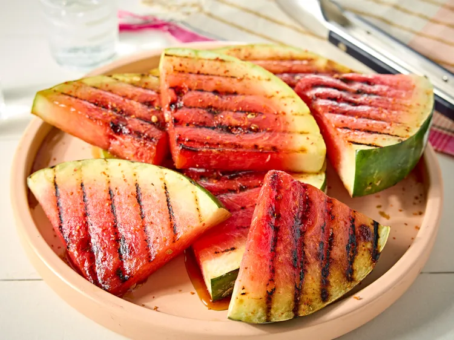

Grilled Watermelon

Three ingredients are all you need to amp up your next summertime backyard BBQ. Grilling watermelon adds smokiness and is like a party in your mouth. If you experiment with different spices, keep the amount of sugar the same–you want the slices to caramelize and get good grill marks.
Ingredients
- 1/2 baby watermelon, cut into 8 (1-inch thick) triangles
- 2 teaspoons sugar
- 1 1/2 teaspoons chili lime seasoning (such as Tajín Clásico®)
Steps
- Gather the ingredients. Preheat an outdoor grill for medium-high heat and lightly oil the grate.
- Place watermelon slices on a clean work surface. Mix sugar and chili lime seasoning in a small bowl until evenly combined.
- Sprinkle half of sugar mixture over watermelon slices. Flip slices over and sprinkle with remaining sugar mixture.
- Place watermelon directly on the grill grate and cook until caramelized with grill marks, about 2 minutes. Turn and grill until grill marks develop, 2 minutes more. Transfer to a plate and serve immediately.
Home